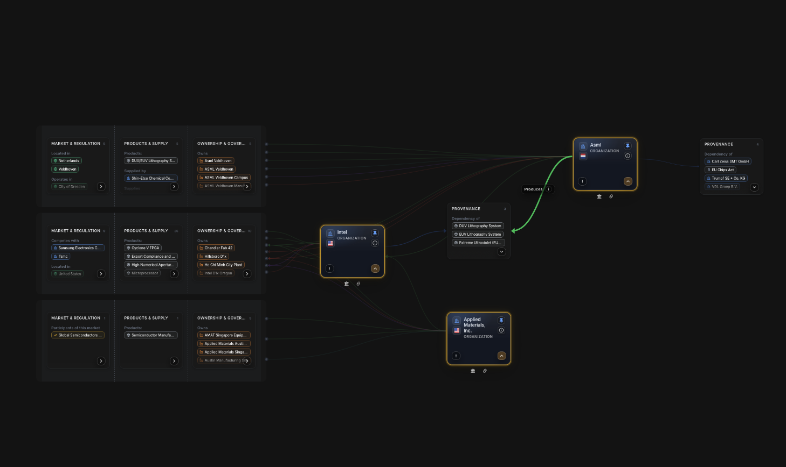

Signal Injection
Scenario request framing
A simulation run begins with a scenario request: a regulatory move, market disruption, access restriction, industrial event, or narrative shift.
Horizon Agent Horde
Agent Horde runs governed simulation worlds to observe how institutions, companies, markets, and narratives may move in response to scenario-driven requests.

Scenario request framing
A simulation run begins with a scenario request: a regulatory move, market disruption, access restriction, industrial event, or narrative shift.
Agent populations, reaction paths, scenario variation
Multiple governed worlds can be explored in parallel so competing institutional, commercial, and narrative reactions are tested rather than assumed.
Artifacts, lineage, review stages
Each run preserves artifacts, task lineage, review checkpoints, and aggregate output so alternative reactions can be compared and challenged.
01
Facilities, corridors, substitute paths, reaction timing
Test how firms, regulators, logistics actors, and adjacent operators may react when a disruption signal is introduced into a concentrated supply chain.

02
Jurisdictions, enforcement paths, downstream adaptation
Simulate how legal, administrative, and market participants may respond when a rule change, sanctions signal, or licensing constraint enters the system.

03
Institutional messaging, market perception, secondary coordination
Observe how narrative actors, institutions, and commercial entities may align, diverge, or reinforce each other after a scenario-driven signal enters public space.

Agent Horde is designed to simulate plausible institutional and market response paths without reducing complex reaction to a single forecast.